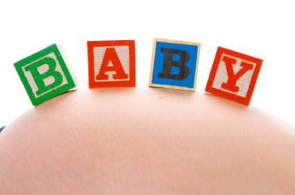

Pregnancy 101
|  | Pregnancy is one of the most wonderful times in a woman's life. This website is a pregnant woman's survival guide. Throughout this website there will be explanations of each trimester to help make your pregnancy a wonderful experience. |
First TrimesterWeeks 1-12The first trimester of pregnancy lasts from conception until 12 weeks gestation (pregnancy length). Women usually don’t realize they are pregnant until at least two weeks into the first trimester, when they miss their period. During the first trimester, your growing baby is developing at an amazing rate. A baby starts out as a few cells (called an embryo) until it reaches its eighth week, and thereafter a fetus, and proceeds to develop the basis for all of the mechanisms it will need within the first trimester. Development begins when the fertilized egg attaches itself to the wall of the uterus in a process called implantation. If all goes well, the fetus will be approximately 6 to 7.5 cm in length, and weigh a little over 1 ounce by the end of the first trimester. |
 |
Second TrimesterWeeks 13-25For many women, the middle part of pregnancy (the second trimester) is the most comfortable pregnant period. The second trimester is a good time to prepare yourself and your home for the arrival of the new baby. This is the time to begin preparing a nursery or other space for the baby, to learn about breast feeding, and to study books about early childcare. The second trimester marks a period during which the developing fetus becomes active, and begins to move, kick and swallow. Around the fifth month of pregnancy, the fetus gains the ability to turn from side to side or head over heels. It is usually around this point in the pregnancy (between the 18th and 22nd weeks) that most women experience quickening, or the ability to feel fetal movement. It is also during this stage that the fetus begins to sleep at regular intervals. By the end of the second trimester the fetus is around 8 to 12 inches long and weighs up to 1 pound. |
 |
Third TrimesterWeeks 26-40The final stage of pregnancy, weeks 28 through 40, is often marked by excited expectation of the baby's arrival. At this stage, it is a good idea to have your hospital overnight bag packed and ready to go. The growing fetus begins to be aware of its surroundings as the third trimester gets underway. Early in the third trimester, the fetus begins to open and close its eyes and suck its thumb. He or she also begins to respond to light and sound. As the fetus continues to grow, it has less and less room to move around. Some women report being able to identify the shape of an elbow or a heel poking into their abdomen. At the end of this trimester, (and the end of the pregnancy), the fetus moves into the position for birth, which usually means he or she moves into a head down position lower in the mother's abdomen, nearer to her pelvis. |
 |
Nutrition and FitnessEating and Exercising correctly are two of the most important things during pregnancy. Here you will be able to find out what a healthy pregnancy diet consists of, what not to eat when pregnant, how to exercise correctly, exercises that are fun during pregnancy and how much weight gain is healthy during pregnancy. |
 |
Countdown to BabyEvery mother to be has many questions about labor and delivery and what to do in preperation of your little one's arrival. Here you will learn about some childbirth class options, what are some baby essentials you need for your body and different types of deliveries. |
 |